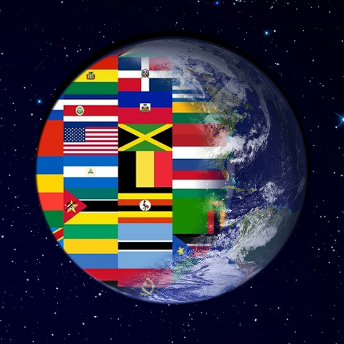

Ever wonder if one event never happened. That can change the whole world and history as well but it's fun to think about. Think of an event and tell yourself "What if that never happened?" or "what if that actally happened" etc. Alternate history is fun no doubt but it can be also scary depending on the event like the "Cold War".
YouTube channel 